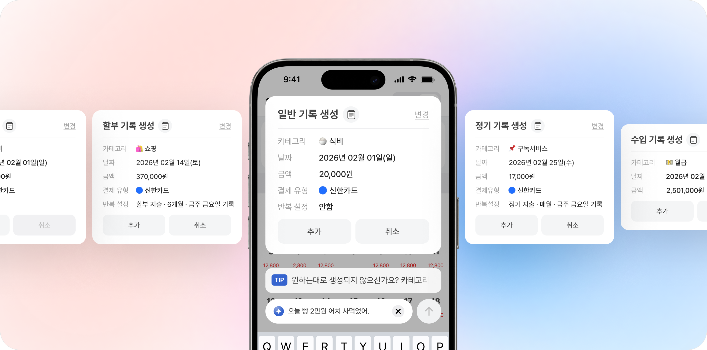
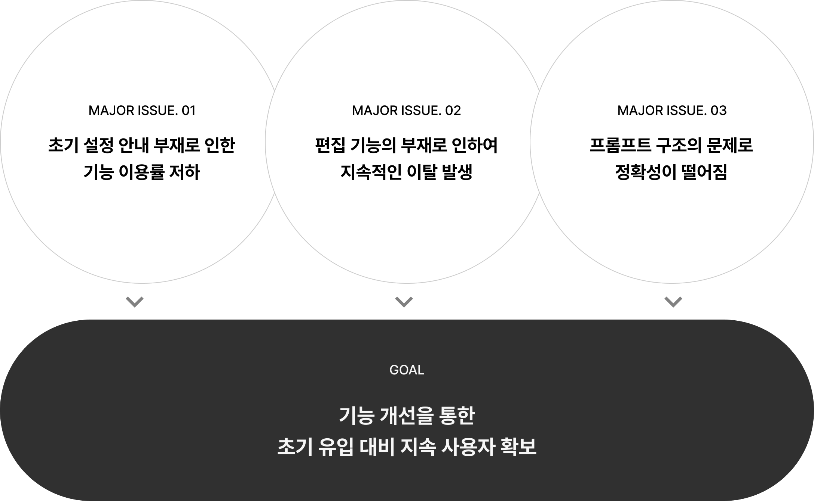
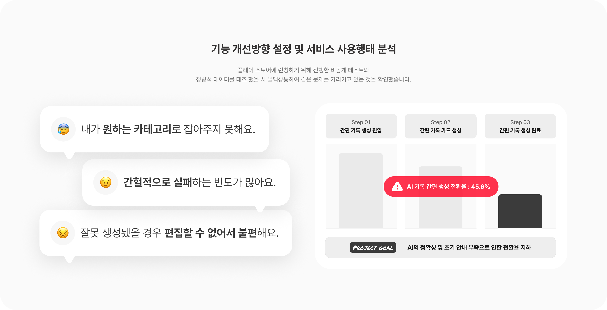
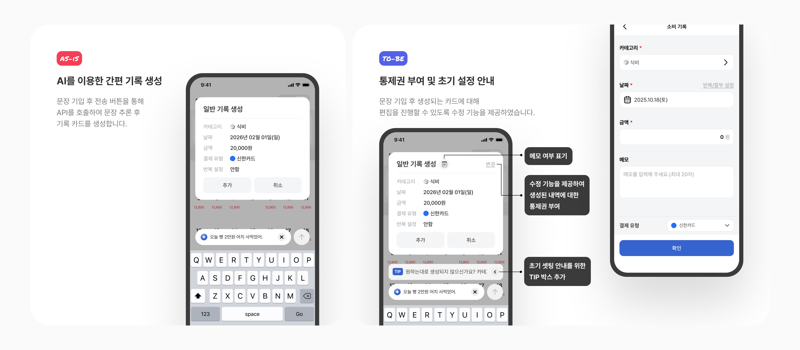
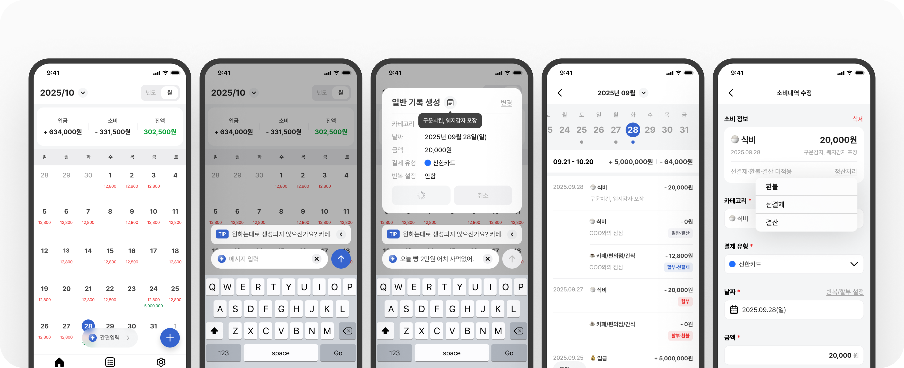

A·Wallet,
AI 간편 기록 기능 사용성 개선
가계 기입 시 번거로운 수기 기입보다 한 문장으로 간편하게 가계 기록을 생성할 수 있는 기능을 도입하였습니다.
본래 목적과는 달리 추론 후 생성되는 결과물의 정확성이 떨어지는 문제와
내역을 변경할 수 있는 수정 기능을 제공하지 않아 불편함을 초래 하였습니다.
이를 개선하고 간편 생성 시 생성완료 까지의 유실율을 최소화 하기 위해 개선을 진행하였습니다.
Project Overview
서비스 개선방향 설정 및 서비스 사용행태 분석
가계 기입 시 수기 기입으로 인한 번거로움을 해소해줄 기능으로 AI를 통하여 한 문장으로 생성할 수 있도록 하였으나
예상했던 것과는 달리 높은 사용량을 보여주지 못하고 있음을 확인했습니다.


The direction of improvement 01
간편생성 시 내역을 수정할 수 없는 불편함 존재
개선 방향
간편 입력으로 기록 카드 생성 시 메모에 대한 여부와 내역을 수정할 수 없는 불편함이 존재 했습니다.
이를 완화 하기 위해 메모 영역을 추가 했으며 생성된 카드 내역을 수정할 수 있도록
기존의 소비 기록 화면을 재사용하여 생성된 카드에 접근할 수 있는 통제권을 부여하였습니다.

The direction of improvement 02
프롬프트 구조 개선 및 휴무일 추론을 위한 외부 API 연동
프로젝트 목표
간편 기록 생성 시 간헐적으로 실패하는 경우가 빈번하게 발생했고 항목별로 명확한 추론할 수 있도록 프롬프트 구조를 변경했습니다.
명확한 추론을 위해 기록에 필요한 항목별(Slot)로 분리하여 정확한 기록 카드(JSON)를 생성할 수 있도록 개선 하였습니다.

Project Results
UX/UI 및 프롬프트 구조 개선을 통해 보다 정확한 간편 생성 경험 조성
프로젝트 결과
기존의 간편입력은 기록카드 생성 후 취소로 이어지는 비율이 50% 이상 이었습니다.
기능을 도입한 본래 목적을 충족시키지 못한 전환율을 가지고 있었으며 이를 개선 하기 위해 프롬프트 구조와
기능 개선을 통하여 기록 생성완료의 비율을 확보할 수 있었습니다.
